Карта
Коллауты и пять коридоров. Кейв — у B; у A — Пончик, Короткая A, Храм и Линия КТ.
CS2 · командная система · L!S
55 минут на единый язык, контроль Мид и синхронные выходы. Затем — 25 минут сдачи гранат.
Маршрут тренировки
Коллауты и пять коридоров. Кейв — у B; у A — Пончик, Короткая A, Храм и Линия КТ.
Дефолт КТ, дефолт T, контроль Мида и три реакции без импровизации в момент контакта.
Мейн A + Пончик, Рампа B с Кейв/Короткой, сплит B после Мида и десять именных гранат.
Голосовой протокол
Граната в руке, путь понятен, свой номер входа назван. Это не начало.
Только D4ba запускает волну. Гранаты летят сразу; первые двигаются на взрыве флешки.
Любой говорит при раннем дыме, смерти, пуше в спину или потерянной гранате. Все замирают.
D4ba называет новый сбор: A, B, Мид или сохранение. Старый план больше не действует.
Коллауты · актуальная геометрия
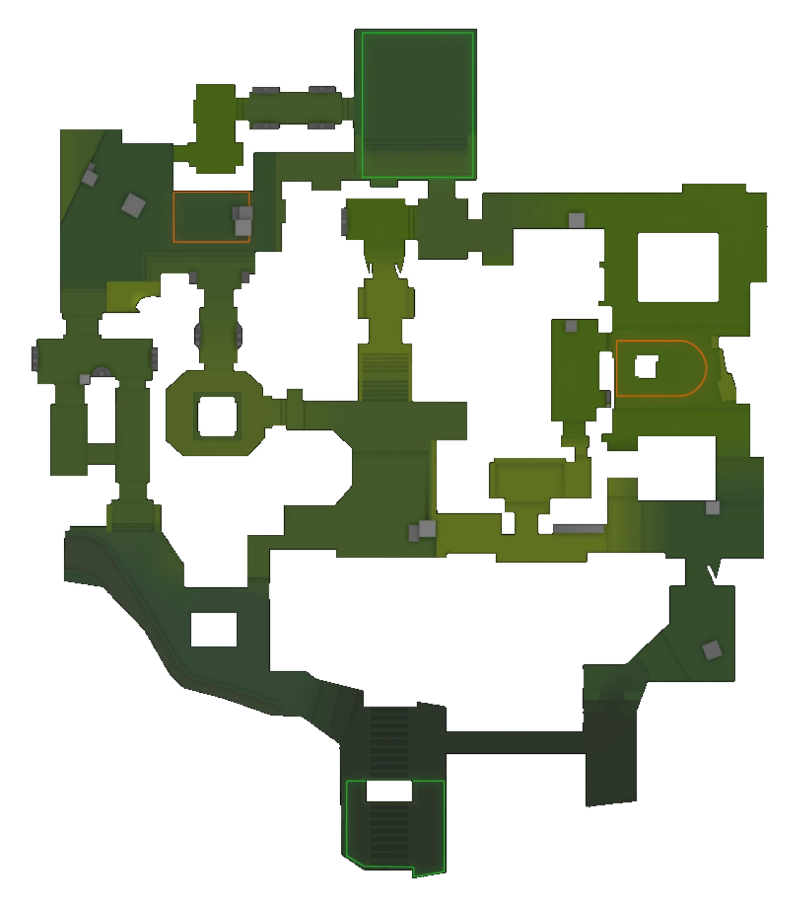
Радар: CSNADES.gg, версия выносок V1; локальная копия для внутренней тренировки, без обрезки.
Топология Ancient
Дефолт КТ · пять зон
Схема согласована с актуальными гайдами BoostRoom (сбалансированный дефолт КТ) и CS2Pulse (Мид). Назначения игроков — тренировочная гипотеза.
Реакция КТ · Мид
Реакция КТ · A
Реакция КТ · B
Ротации КТ
Якорь остаётся. Ближайший помощник готовится, но не снимает вторую зону.
Первая ротация идёт через Респаун КТ. Дальний якорь продолжает держать выпад.
STOP пикам. Сбор 3–4 игрока; A: Храм + Линия КТ. B: Короткая + Кейв/КТ.
Если нет набора и гранаты — сохраняемся. Решение называет D4ba, не самый близкий к пленту.
Дефолт T · 1–3–1
Контроль Мид
Порядок дым → флешка → пара следует актуальным линейкам CSNADES и принципам контроля Мида из BoostRoom/CS2Pulse.
Развилка после Мид
Выход A · Мейн A + Пончик
Выход A · гранаты
Выход A · синхронизация
middle: «КТ + ХРАМ ЛЕТЯТ». Группа Пончика стоит.
middle готовит A флешка. D4ba ставит прицел на первый угол.
D4ba и d0lfero показываются вместе. L!S видит бой D4ba.
Reconnecting вносит бомбу; все занимают позиции после установки, не гонятся.
Выход B · Рампа
Выход B · гранаты
Выход B · синхронизация
Дымы Кейв + Короткая/Аллея в воздухе. Все подтверждают «ГОТОВ».
Колонна молотов горит. Первая пара на границе Рампа.
Флешка на пленте лопается; D4ba чистит Колонну, L!S — его размен.
Бомба во второй волне; дым Кейв и Короткая контролируются двумя игроками.
Сплит B после Мида
Сплит B основан на актуальной топологии Мид → Ягуар → Кейв и принципе разделённого выхода из BoostRoom; порядок ролей — командная заготовка.
Если Мид не взят
Постоянные роли
Капитан/первый. Первый в Мид / на плент; даёт GO, STOP и СБРОС.
Гранаты. Отсчёт флешки, дым Верха мида, дым Короткой B.
Край. Удержание A, Пончик или первый на Рампе B.
Размен. Держит дистанцию и забирает бой первого.
Бомба/связующий. Вторая волна; дым Кейв/КТ.
Сухой прогон GO / STOP
middle: STOP. Все остаются вне плента. D4ba: СБРОС B или повтор A после нового дыма.
Пара Мида не входит. Рампа ждёт. Через 4 секунды D4ba решает GO только Рампа или СБРОС.
Если мгновенный размен — дым и СБРОС. Если размена нет — полный STOP, бомба назад.
Reconnecting сам не меняет путь. Говорит «БОМБУ ВИДЕЛИ»; D4ba выбирает безопасную доставку.
Гранаты · карта владения
Гранаты 01–05 · T
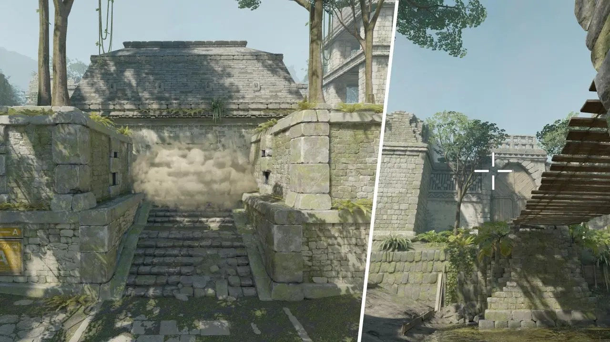
Владелец: middle
Запасной: L!S
Стоя · прыжок + ЛКМ · точная
С респауна T; стена для первой пары Мида.
Открыть линейкуЗачёт: 5 из 5
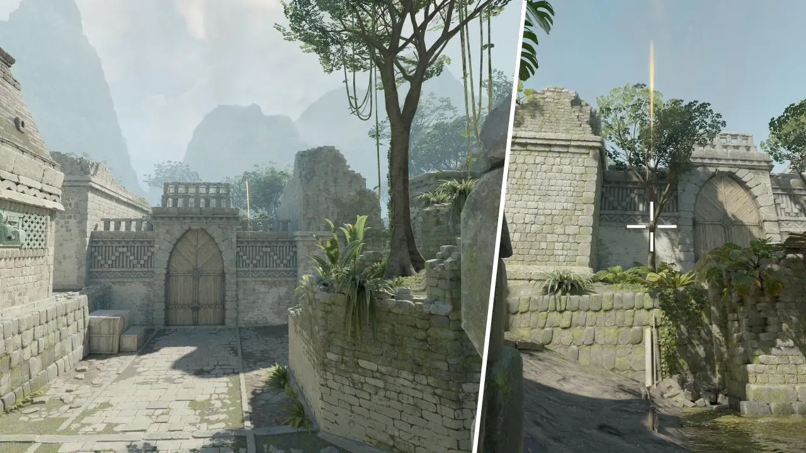
Владелец: middle
Запасной: D4ba
Стоя · прыжок + ЛКМ · точная
С респауна T; первый двигается на взрыве.
Открыть линейкуЗачёт: 3 из 3
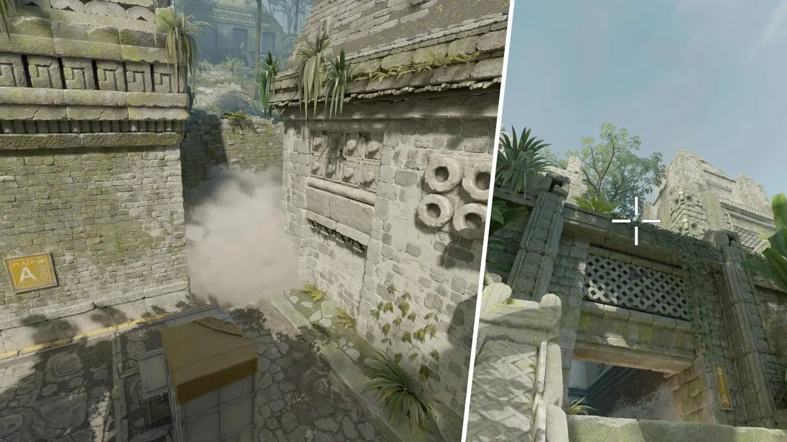
Владелец: Reconnecting
Запасной: d0lfero
Стоя · прыжок + ЛКМ · точная
С Внешней A; закрывает Линию КТ.
Открыть линейкуЗачёт: 5 из 5
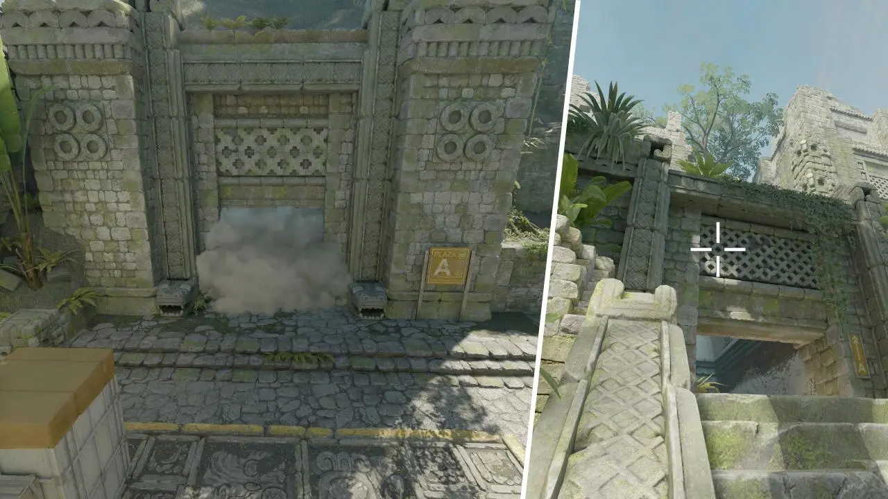
Владелец: d0lfero
Запасной: L!S
Стоя · прыжок + ЛКМ · особо точная
С Внешней A; часть полного выхода A.
Открыть линейкуЗачёт: 5 из 5
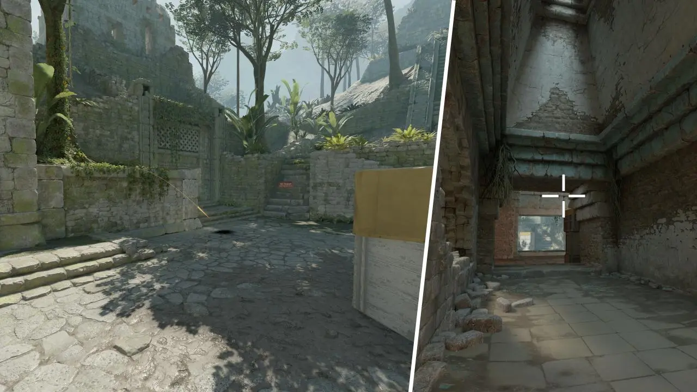
Владелец: middle
Запасной: D4ba
Присед · ЛКМ · точная
Из Мейн A; D4ba начинает на взрыве.
Открыть линейкуЗачёт: 3 из 3
Гранаты 06–10 · B / КТ
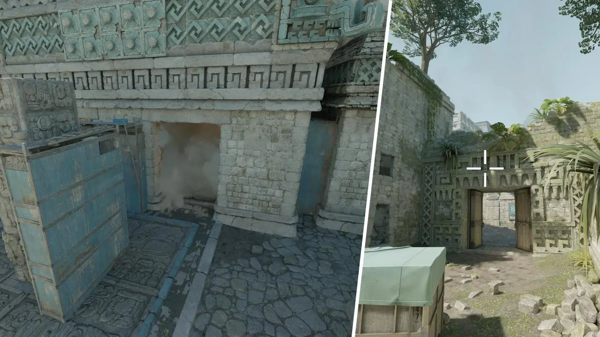
Владелец: Reconnecting
Запасной: d0lfero
Стоя · прыжок + ЛКМ · точная
Из Руин; отсекает Кейв/Боковую.
Открыть линейкуЗачёт: 5 из 5
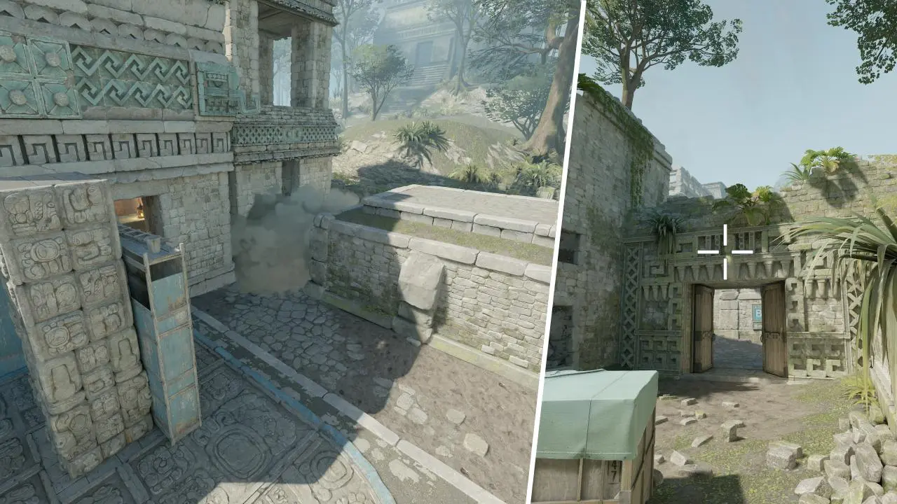
Владелец: middle
Запасной: L!S
Стоя · прыжок + ЛКМ · точная
Из Руин; закрывает Короткую/Аллею B.
Открыть линейкуЗачёт: 5 из 5
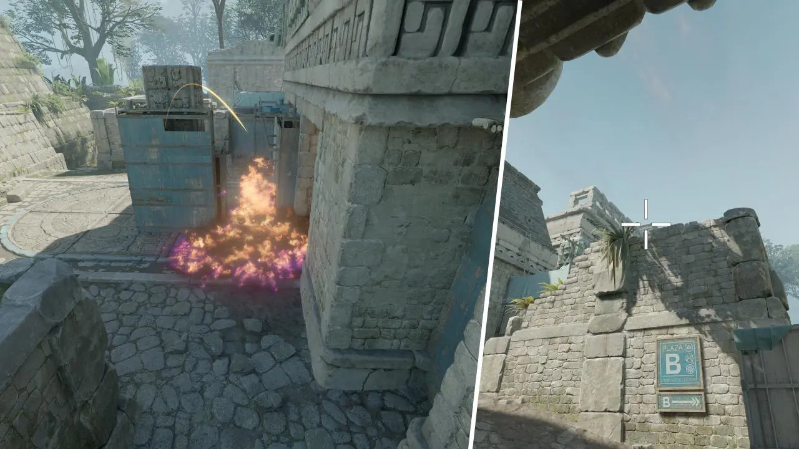
Владелец: d0lfero
Запасной: D4ba
Стоя · ЛКМ · точная
Из Дверей B; выгоняет опорника Колонны.
Открыть линейкуЗачёт: 3 из 3
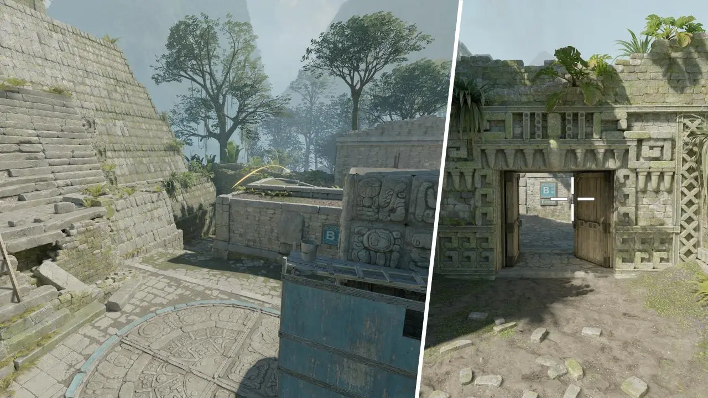
Владелец: middle
Запасной: D4ba
Стоя · прыжок + ЛКМ · точная
С Ящика в Руинах; запускает первую пару Рампы.
Открыть линейкуЗачёт: 3 из 3
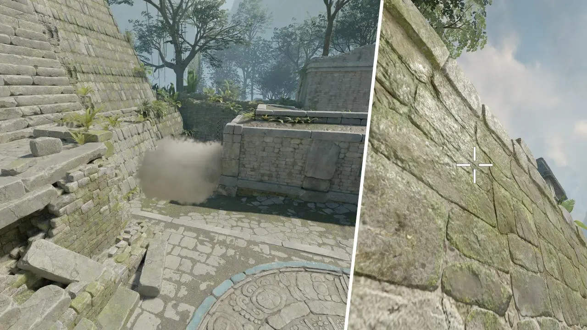
Владелец: Reconnecting
Запасной: L!S
Стоя · прыжок + ЛКМ · точная
С респауна КТ; задерживает быстрый выход B.
Открыть линейкуЗачёт: 5 из 5
Финиш созвона
Если линейка не сдана — она не входит в матчевый выход, владелец меняется на запасного.
Домашняя работа
Каждый владелец сдаёт два основных дым. Видео ошибки: стойка, прицел, момент отпускания.
Флешка/молотов без паузы после команды. Запасной повторяет минимум одну линейку владельца.
Найти один раунд Ancient, где Мид изменил выбор точки. Записать GO или STOP, который вы бы дали.
Проверка · 8 вопросов
Зачёт: 7/8. Ошибка возвращает к конкретной схеме и одному сухому повтору.
Стрелки и пробел переключают слайды. T запускает таймер. F включает полный экран. R показывает ответы на последнем слайде.